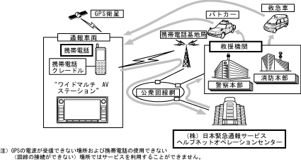

| Helpnet system outline |
| ● |
By connecting your mobile phone to the "Wide Multi -AV Station" with a hands -free system with a retailer -mounted option, you can use the emergency call system "Help Net".
|
| Attending |
The mobile phone can only be used by the specified model.
| ● |
The Helpnet System has a Hands -free system from a Hands Free System to report to the helpnet operation center from a hands -free system in the event of a trouble during operation, and the Helpnet Operation Center is an rescue rescue activity to the rescue agency (fire department / police station).They quickly and accurately communicate the necessary information, reduce carcasses and injuries and prevent secondary disasters related to traffic.
|
|  |
 Preparation when using for the first time Preparation when using for the first time
|

Emergency call function
|
||||||||||||||||||||||||||||||||||||||||||||||||||||||

Helpnet system handling precautions
|
 Related parts Related parts
|